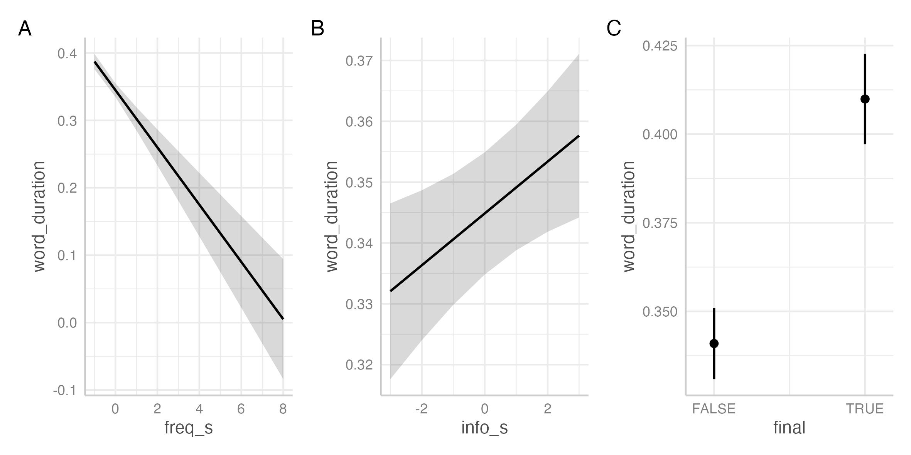

Foundations
Session 8: Preregistration and Reporting
Joshua Wilson Black ![]()
Te Kāhui Roro Reo | New Zealand Institute of Language, Brain and Behaviour
Te Whare Wānanga o Waitaha | University of Canterbury
2025-07-31
Last Time
- A complex real world example
- A Big LMM from (Sóskuthy and Hay 2017)
- Some lessons along with way:
- Extracting random effects
- More plotting hints
This Time
- Preregister
- Implement
- Report
Preregistration
False positives
- A p-value of 0.05 means we’ll wrongly reject the null in roughly 20% of cases.
- i.e., we accept some false positives (‘type I errors’).
- This is a disaster if we can decide our hypothesis on the basis of the data.
- Once there are 20 pairs of variables (around 7 variables), there’s probably a ‘statistically significant’ relationship
p-Hacking
Preregistration
- A ‘sealed envelope’: state hypothesis and proposed analysis before you have data.
- Two main services:
- Difference:
- AsPredicted just wants details required to avoid p-hacking etc.
- OSF.io allows more detail to evaluate research quality (incl. power analyses.)
For advice on AsPredicted pre-registrations go here
A toy hypothesis
- We’ve seen some well-known effects of usage factors on word duration in (Sóskuthy and Hay 2017).
- Their main point is about change in usage factors over time.
- This relies on the time depth of ONZE.
- In a ‘shallower’ corpus, we can test the well known effects.
- We’ll use the QuakeBox transcript from the LaBB-CAT demo server.
A toy hypothesis (cont.)
- We want to know if:
- Increased word frequency reduces word duration.
- Increased ‘previous informativity’ increases word duration.
- Word finality increases word duration.
- We will add the available controls.
- speech rate (should decrease word duration)
- part of speech (various)
- repetition in previous 30 seconds (decrease)
- Syllable count (increase)
Preregistration on AsPredicted
- Create a new pre-registration here
- Here’s one I made earlier
- During review: create an anonymous pdf of pre-registration.
- After publication: make pre-registration public.
Implement
Implement
- Create a new project from here
- Data extraction is in the
extract_data.Rscript. - Analysis is in the
analysis.Rscript. - Includes data wrangling, model fit, and following instructions for convergence errors.
Report
Table
| term | estimate | statistic | std.error | p.value |
|---|---|---|---|---|
| freq_s | -0.0424762 | -7.879244 | 0.0053909 | 0.0000000 |
| info_s | 0.0042634 | 2.587370 | 0.0016478 | 0.0097153 |
| finalTRUE | 0.0689831 | 16.238263 | 0.0042482 | 0.0000000 |
Plot
Figure 1: Marginal predictions from final model for focal predictors.
Text
Table 1 presents the coefficients for the model terms associated with the three pre-registered hypotheses. All estimates are in the predicted directions and are significant at \(\alpha = 0.05\).1 Figure 1 shows marginal predictions of word duration for scaled word frequency (Panel A), scaled informativity given previous word (Panel B) and utterance final and non-utterance final words (panel C). As predicted, increased frequency and utterancy finality are associated with decreased word duration and increased informativity given previous word with increased word duration.
Failures
- You can’t modify a pre-registration.
- You can inform readers why you’ve deviated.
- The more you deviate, the less impressive your result appears.
- …but we can’t know everything in advance!
Specific, Personal, Failures
- In above, I reversed an hypothesis …unforgivable
- Forgot to indicate how p-values would be generated …dodgy
- BTW: “Satterthwaite’s degrees of freedom method”, implemented by
lmerTestpackage.
- BTW: “Satterthwaite’s degrees of freedom method”, implemented by
- But, otherwise, all went through as planned.
Summary
Summary
- Congrats, you’ve finished the ‘Foundations’ sessions!
- We’ve covered:
- Basic use of R, RStudio, and
git - Data transformation in
dplyr - Plotting with
ggplot - Linear and Linear Mixed Effects Models and modelling workflows.
- Pre-registration and reporting of models
- Basic use of R, RStudio, and
References
Allaire, JJ, Yihui Xie, Christophe Dervieux, Jonathan McPherson, Javier Luraschi, Kevin Ushey, Aron Atkins, et al. 2024. rmarkdown: Dynamic Documents for r. https://github.com/rstudio/rmarkdown.
Bates, Douglas, Martin Mächler, Ben Bolker, and Steve Walker. 2015. “Fitting Linear Mixed-Effects Models Using lme4.” Journal of Statistical Software 67 (1): 1–48. https://doi.org/10.18637/jss.v067.i01.
Hester, Jim, and Jennifer Bryan. 2024. glue: Interpreted String Literals. https://CRAN.R-project.org/package=glue.
Müller, Kirill. 2020. here: A Simpler Way to Find Your Files. https://CRAN.R-project.org/package=here.
R Core Team. 2024. R: A Language and Environment for Statistical Computing. Vienna, Austria: R Foundation for Statistical Computing. https://www.R-project.org/.
Sóskuthy, Márton, and Jennifer Hay. 2017. “Changing Word Usage Predicts Changing Word Durations in New Zealand English.” Cognition 166 (September): 298–313. https://doi.org/10.1016/j.cognition.2017.05.032.
Wickham, Hadley, Mara Averick, Jennifer Bryan, Winston Chang, Lucy D’Agostino McGowan, Romain François, Garrett Grolemund, et al. 2019. “Welcome to the tidyverse.” Journal of Open Source Software 4 (43): 1686. https://doi.org/10.21105/joss.01686.
Xie, Yihui, J. J. Allaire, and Garrett Grolemund. 2018. R Markdown: The Definitive Guide. Boca Raton, Florida: Chapman; Hall/CRC. https://bookdown.org/yihui/rmarkdown.
Xie, Yihui, Christophe Dervieux, and Emily Riederer. 2020. R Markdown Cookbook. Boca Raton, Florida: Chapman; Hall/CRC. https://bookdown.org/yihui/rmarkdown-cookbook.